Not standard pigpen, but pigpen-like: a custom monoalphabetic substitution (English) whose glyphs are boxes/brackets/chevrons plus short strokes. Word spaces are real.
Read as: “In exactly one minute the office phone will ring and I’ll be sent to the office, where my adoptive family will come collect me. I accept with gratitude.” Spellings above are exactly what the glyphs say: EXACLY (no T), MINUETE (extra E) and GRATTITUDE (extra T) look like the writer’s own misspellings (or small slips), and “ILL” is “I’ll” with the apostrophe omitted.
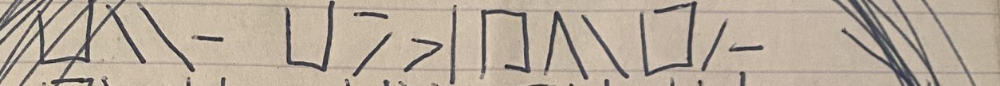
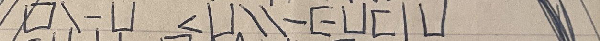
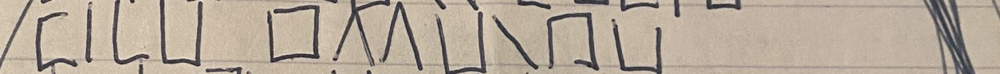
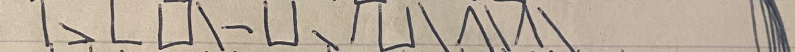
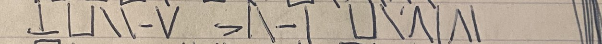
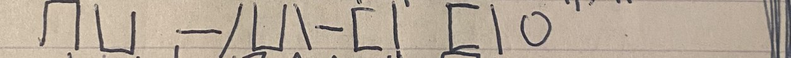
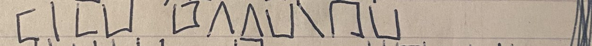
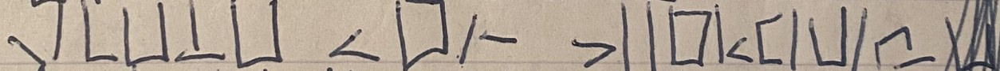
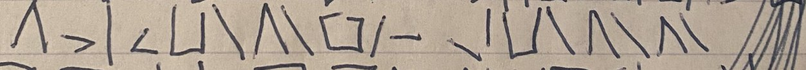
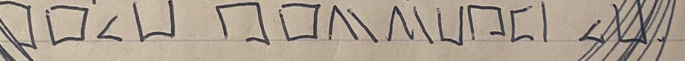
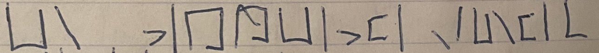
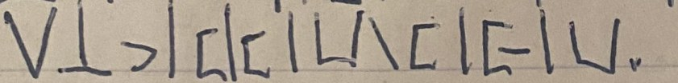
| A | > followed by a tall | |
|---|---|
| B | open-bottom box Π, no hook |
| C | open-bottom box Π with a small hook at the bottom right |
| D | a lone | |
| E | open-top box ⊔ |
| F | Λ |
| G | V |
| H | L-shape |
| I | ⊔ + a trailing \ (or /) |
| L | Λ + a trailing \ |
| M | < |
| N | \ + - (slash and dash, no box) |
| O | square □ (also drawn as a round “o”) |
| P | a | written in front of a < or > |
| R | inverted T ⊥ |
| S | dash then / (dash at mid-height, left of the slash) |
| T | “[” bracket + trailing | |
| U | “[” bracket + a mid-height dash |
| V | small open arc/Π shape + a dash below-right |
| W | a short hook ↘ (+ optional |) |
| X | “7”: dash on top of a / |
| Y | square □ + /- |
Not used in this text: J, K, Q, Z. Glyphs that touch or sit next to each other make one letter, so one letter can be one, two or three pen strokes.
One entry per word, one string per glyph, strokes written left to right. Glyphs are delimited
explicitly (the raw stroke strings are ambiguous in a few places, e.g. h| = W vs h + |).
Glyphs are comma-separated, words are separated by spaces, a trailing . is a full stop in the photo.
The same data is in transcription.json and in the
<script type="application/json" id="transcription"> block of this page (token alphabet,
key, and per-word plaintext with low-confidence flags).
Caveat: strokes were read by eye, and a few readings (line 6 word 3, the end of line 8, the backslash on the second Λ of FAMILY, the first glyph of line 10) were revised after the plaintext was known, so this transcription is not fully independent of the decipherment. S, X and V rest on one occurrence each.
1: U\,\- U,7,>|,N,A\,O/- 2: O,\-,U <,U\,\-,E,U,C|,U 3: C|,L,U O,A,A,U\,N,U 4: |>,L,O,\-,U h|,U\,A\,A\ 5: T,U\,\-,V >|,\-,| U\,A\,A\ 6: b,U -/,U,\-,C| C|,o 7: C|,L,U O,A,A,U\,N,U 8: h,L,U,T,U <,O/- >|,|,O,|<,C|,U/,c-,U 9: A,>|,<,U\,A\,O/- h|,U\,A\,A\ 10: N,O,<,U N,O,A\,A\,U,N,C| <,U. b1: U\ >|,N,N,U,|>,C| h|,U\,C|,L b2: V,T,>|,5|,C|,U\,C|,E,|,U.
| - \ /).\-, D = |, P = pre-stroke, X, S, V, T/U brackets) were read off AND / ONE / PHONE / SENT / ADOPTIVE / ACCEPT / GRATITUDE, and the whole transcription then decodes under one key (see decode.py).Weakest points: S vs X (one occurrence each), V (one occurrence, last glyph of line 8 is partly hidden under the circle strokes), and the exact stroke-grouping at the three misspelled words.